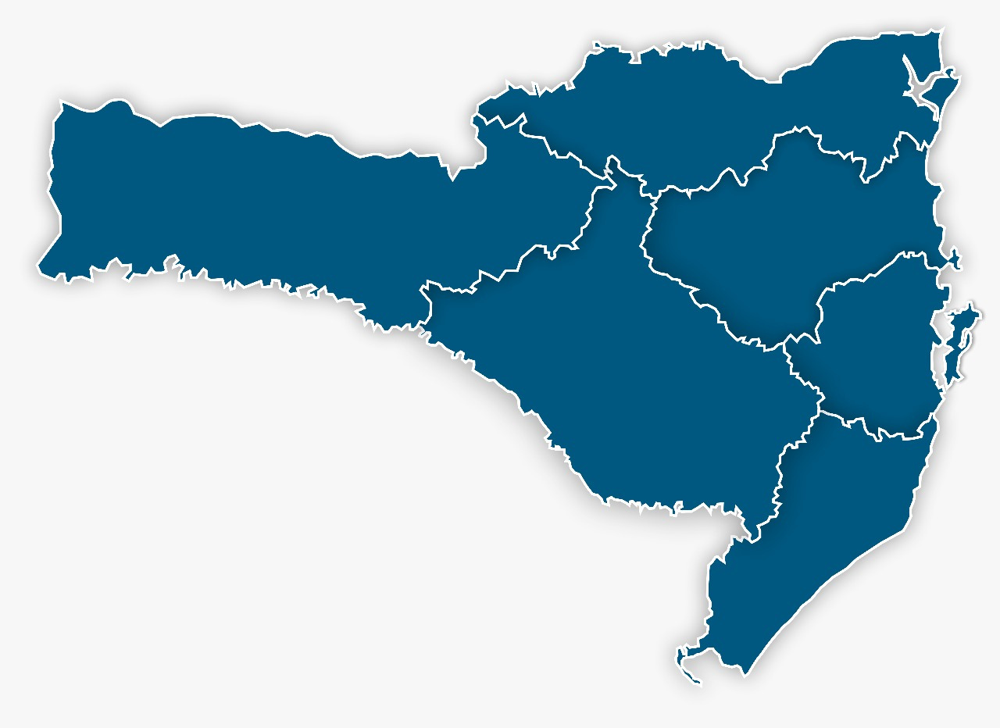
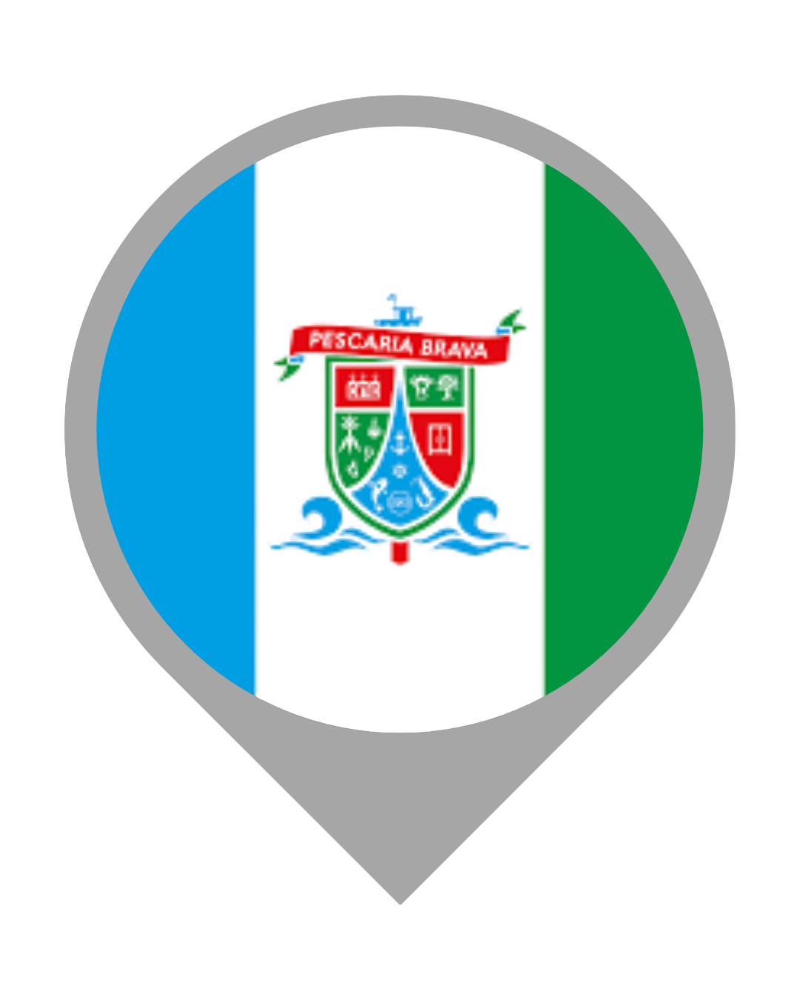
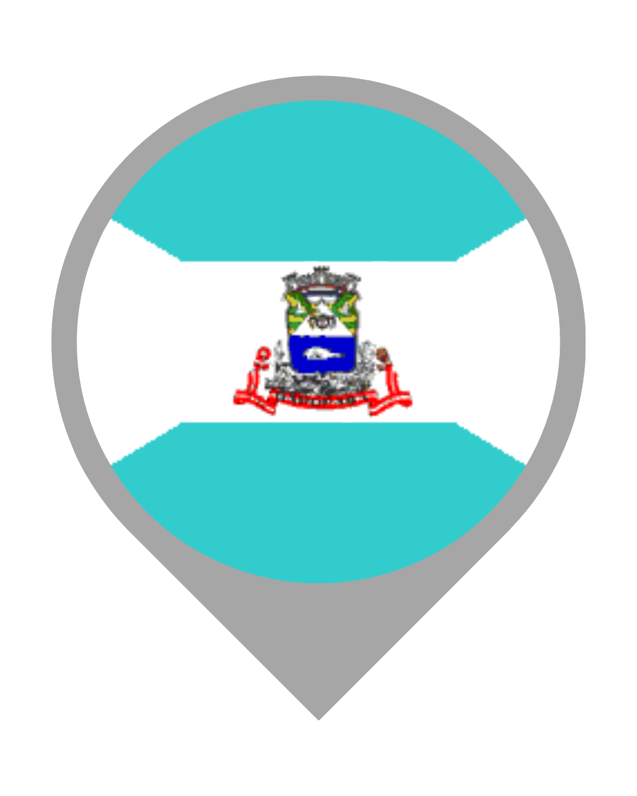
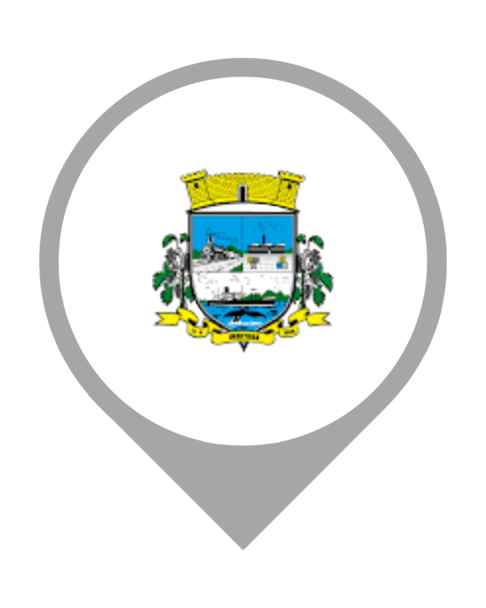

Filtro:
Entre memórias, causos e histórias que atravessam gerações, o projeto Lendas, contos e causos como marcas identitárias do Sul de Santa Catarina busca investigar, preservar e difundir narrativas populares que compõem a cultura local.
Por meio do estudo de lendas, contos e causos, a pesquisa procura sistematizar histórias orais que constituem importantes marcas da memória, da identidade e do patrimônio cultural da região. Em sua primeira etapa, o projeto mapeou narrativas dos municípios de Garopaba, Imbituba e Paulo Lopes. Nesta nova fase, amplia o estudo para Laguna, Pescaria Brava e Imaruí.
Articulando ensino, pesquisa e extensão, a proposta envolve estudantes dos cursos técnicos integrados do Instituto Federal de Santa Catarina (IFSC) – Câmpus Garopaba em ações de investigação, produção audiovisual e organização deste repositório digital voltado à valorização da cultura popular.




“[...] as histórias sempre vêm à luz. Basta que tomemos assento e abramos o coração e os ouvidos para que a jornada comece. Ou recomece, quando, a cada escuta, espaço e tempo se transfiguram [...]”
Marco Haurélio, 2022
Luana De Gusmão - COORDENADORA
Professora do Instituto Federal de Santa Catarina (IFSC) – Câmpus Garopaba. Mestre em Letras pela Universidade Federal do Rio Grande do Sul (UFRGS). Graduada em Letras pela Universidade Federal do Rio Grande (FURG) e especialista em Literatura Infantil e Juvenil pela Universidade de Caxias do Sul (UCS).
Thiago Waltrik - COORDENADOR
Professor do Instituto Federal de Santa Catarina (IFSC) – Câmpus Garopaba. Doutor em Ciências da Linguagem pela UNISUL. Graduado em Ciência da Computação pela Fundação Universidade Regional de Blumenau (FURB), possui especialização em Docência para a Educação Profissional pelo IFSC e mestrado em Mecatrônica pela mesma instituição.
Beatriz Soares Coelho - BOLSISTA
Egressa do Curso Técnico Integrado em Informática do IFSC – Câmpus Garopaba. Atuou como bolsista-pesquisadora no projeto durante o ano de 2025, com bolsa do Programa Institucional de Bolsas de Iniciação Científica para o Ensino Médio (PIBIC- EM/CNPq).
Beatriz da Rosa Gonçalves - BOLSISTA
Estudante do Curso Técnico Integrado em Informática do IFSC – Câmpus Garopaba e bolsista-pesquisador do projeto, com bolsa do Programa Institucional de Bolsas de Iniciação Científica para o Ensino Médio (PIBIC-EM/CNPq).
Petrus Ferreira Silva - BOLSISTA
Eloiza Santana - BOLSISTA
Egressa do Curso Técnico Integrado em Informática do IFSC – Câmpus Garopaba. Atuou como bolsista-pesquisadora no projeto durante o ano de 2024, com bolsa do Programa Institucional de Bolsas de Iniciação Científica para o Ensino Médio (PIBIC- EM/CNPq).
Gabriel Silveiro - BOLSISTA
Egresso do Curso Técnico Integrado em Administração do IFSC – Câmpus Garopaba. Atuou como bolsista-pesquisador no projeto durante o ano de 2024, com bolsa do Programa Institucional de Bolsas de Iniciação Científica para o Ensino Médio (PIBIC- EM/CNPq).
Maria Julia - BOLSISTA